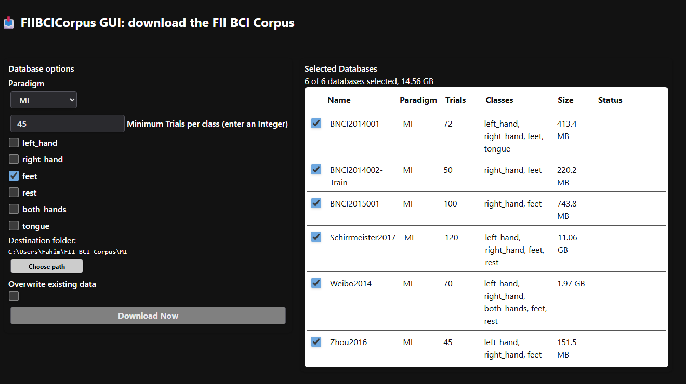

DownloadFII.jl
This module downloads the databases of the FII BCI Corpus and locates them on disk.
By default, the corpus is downloaded in folder FIIBCICorpus in the homedir (e.g., C:\Users\Name\FII_BCI_Corpus on Windows), where selectDB finds it automatically.
Methods
| Function | Description |
|---|---|
FIIBCIcorpus.DownloadFII.downloadDB | run a web-based GUI to download the FII BCI corpus |
FIIBCIcorpus.DownloadFII.corpusDir | return the default directory of the FII BCI corpus |
📖
FIIBCIcorpus.DownloadFII.downloadDB — Function
(1)
function downloadDB(; nDownloads::Int = 4)
(2)
function downloadDB(url::String, dest::String = homedir(); nDownloads::Int = 4)
(3)
function downloadDB(urls::Vector{String}, dest::String = homedir(); nDownloads::Int = 4)(1) Interactive GUI mode
Open an interactive GUI to select and download databases from the FII BCI Corpus.
The size of the corpus on disk is 36.6 GB for MI and 14.2 GB for P300.
The GUI will open in the primary HTML display found in the Julia display stack, which typically is VS Code if you use it or the default web-browser. It looks like this:

Once a BCI paradigm is chosen (MI or P300), the following inclusion criteria can be enforced:
- the minimum number of trials per class
- the motor imagery classes (for MI paradigm only, as all P300 databases have the same classes)
The table on the right lists the available databases given the current inclusion criteria, with the size of their ZIP archive (read from Zenodo, if reachable) and their status in the destination folder (✓ if already present). The check box at the beginning of each row selects the databases to be downloaded (all by default); the number and the total size of the selected databases are displayed above the table.
The databases are downloaded in the folder FIIBCICorpus created in the homedir (e.g., C:\Users\Name\FII_BCI_Corpus on Windows). This is the default location where corpusDir and selectDB look for the corpus.
The Choose path button invokes a folder selection window to choose another folder where the corpus is to be downloaded. In this case, the folder must be passed explicitly as argument corpusdir to function selectDB.
The folder selection window may open minimized. Check the task bar if you don't see it.
If the Overwrite existing data check box is not checked (default), the databases will be downloaded only if a folder with the same name does not exist already. If you have previously downloaded the corpus and you want to update to a new version, check this box: the folders of the selected databases (only) are removed and downloaded again.
As soon as the Download Now button is pressed, the GUI automatically downloads the databases, extracts their contents, and removes the ZIP archives. The download runs in the background: the GUI stays responsive and the button is disabled until the download has ended.
Up to nDownloads databases are downloaded at the same time, while their extraction runs in parallel on the threads available to Julia — see Threads.nthreads(). To use several threads, start Julia with, e.g., julia -t auto, or set Julia: Num Threads in the settings of the VS Code Julia extension.
If the download or the extraction of a database fails, its partial ZIP archive and folder are removed, so that it is downloaded again next time, and the other databases are downloaded anyway.
The progress of each database and of the whole download is displayed in the GUI. A progress indicator is also displayed in the REPL throughout the download and extraction process and a notification is printed when the download has ended.
Once the corpus is downloaded in the default location, FIIBCIcorpus finds it automatically. Therefore, omitting the argument corpusdir while using function selectDB will automatically point to the FII BCI corpus. Since the location does not depend on the Julia or package installation, there is no need to download the corpus again after updating them.
(2) Direct download of a single Zenodo record
Argument url must point to a Zenodo record page (e.g. "https://zenodo.org/records/17670014").
All ZIP archives of the record are downloaded and extracted into folder dest (the homedir by default), as in the GUI: each database is extracted in its own folder, the ZIP archives are removed, the databases whose folder exists already in dest are skipped and up to nDownloads databases are downloaded at the same time. The other files of the record (e.g., documentation) are not downloaded.
A progress indicator is displayed in the REPL throughout the download and extraction process.
(3) Direct download of several Zenodo records
This is the same as (2), but for a vector of Zenodo record URLs.
A time out of three hours is enforced for the download of each database. If your connection requires more than that for a large database, consider downloading and unzipping such a database from Zenodo.
See Also corpusDir
Examples
using FIIBCIcorpus
downloadDB() # run the GUI
downloadDB("https://zenodo.org/records/17670014")
downloadDB(["url1", "url2"], "/path/to/folder")FIIBCIcorpus.DownloadFII.corpusDir — Function
function corpusDir()Return the default directory of the FII BCI corpus, that is, folder FIIBCICorpus in the homedir (e.g., C:\Users\Name\FII_BCI_Corpus on Windows), where downloadDB downloads it by default.
If this folder does not exist, a warning is printed and nothing is returned. In an interactive session, the user is first asked in the REPL whether to launch the GUI of downloadDB to download the corpus. Since the download runs in the background, call corpusDir() again once it has ended.
If the corpus has been downloaded in another folder, that folder must be given explicitly to the functions using it (e.g., argument corpusdir of selectDB).
Return the path of the corpus as a String, or nothing if it is not found.
See Also downloadDB
Example
using FIIBCIcorpus
# get the full path of all .npz (data) files of database AlexMI
db = loadDB(joinpath(corpusDir(), "MI", "AlexMI"))
# process the data file by file ...